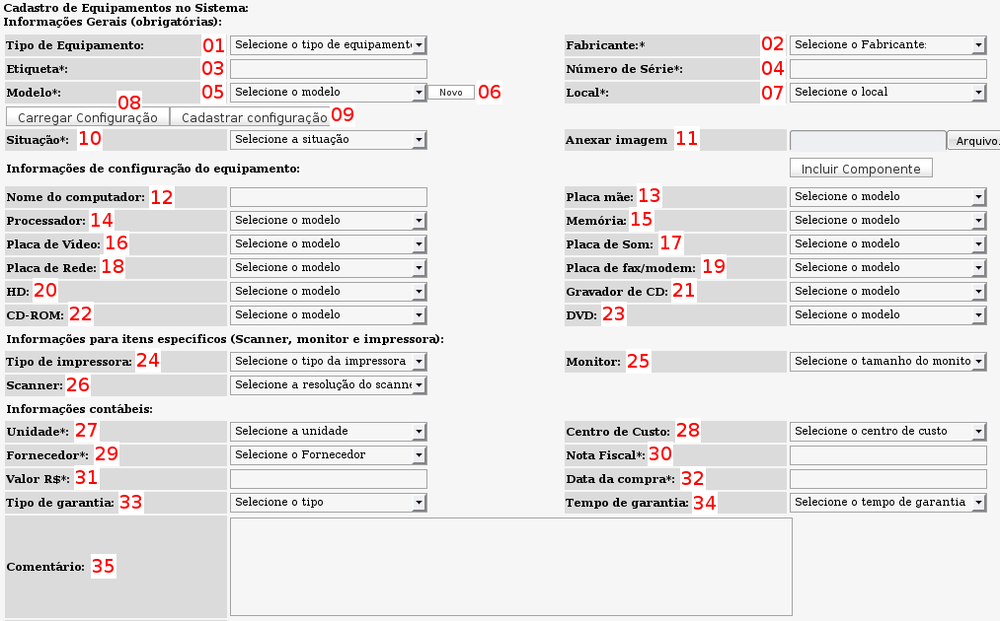

Cadastro de equipamentos (Inventário -> Cadastrar -> Equipamento)
Através dessa tela é possível cadastrar equipamentos, modelos de equipamentos, componentes e modelos de configuração de equipamentos.

Tela de cadastro de equipamentos - versão 2.0rc3
01 - Tipo de equipamento: essa caixa serve para selecionar o tipo de equipamento que se está cadastrando. Exemplos de tipos de equipamentos: computador, notebook, monitor, impressora, etc..
Novos tipos de equipamentos podem ser cadastrados no menu Admin -> Inventário -> Equipamentos
02 - Fabricante: selecione aqui o fabricante do equipamento. Novos fabricantes podem ser cadastrados no menu Admin -> Inventário -> Fabricantes
03 - Etiqueta: informe aqui o número da etiqueta de patrimônio do equipamento. A etiqueta, juntamente com o campo Unidade, formará o identificador único de cada equipamento. Somente são aceitos valores numéricos inteiros para o campo etiqueta. Caso ache necessário a utilização de caracteres alfanuméricos nesse campo, utilize o campo
unidade para isso.
04 - Número de série do equipamento. São aceitos caracteres alfanuméricos nesse campo.
05 - Modelo do equipamento. Você pode selecionar o modelo do equipamento a partir da listagem exibida ou então cadastrar novo modelo clicando no botão "Novo" ao lado direito da caixa de seleção. Ao cadastrar um novo modelo será necessário recarregar a página para que o mesmo apareça na caixa de seleção.
06 - Cadastro de modelo: ao clicar no botão "Novo" será exibida uma janela com a listagem de todos os modelos já cadastrados no sistema, a apartir dessa tela é possível cadastrar novos modelos ou editar as informações já cadastradas.
Para cadastrar um modelo basta clicar no link "Cadastrar modelo".
- Campo Nome: é a descrição do modelo a ser cadastrado. Ex: Optiplex GX 370
- Campo Tipo de equipamento: selecione o tipo de equipamento a qual o modelo se refere.
- Campo Anexar imagem: é possível gravar uma ou mais imagens referentes ao modelo que se está cadastrando, dessa forma, equipamentos do mesmo modelo terão a mesma imagem associada. Para adicionar mais imagens ou excluir imagens já associadas basta exibir a listagem completa de modelos e editar o modelo em questão.
07 - Local onde está alocado o equipamento. Para maiores informações sobre a função desse campo acesse a página referente a
locais.
08 - Carregar Configuração: o OcoMon permite o cadastro prévio de configurações específica dos modelos de equipamentos existentes, facilitando o processo de cadastro de equipamentos de mesmo modelo. Para carregar um modelo de configuração previamente cadastrado, basta selecionar o modelo do equipamento e clicar no "Carregar Configuração", dessa forma, todas as configurações de hardware serão preenchidas automaticamente no formulário de cadastro de equipamento.
09 - Esse botão permite o cadastro de configurações para modelos de equipamentos. O formulário é similar ao formulário de cadastro de equipamentos. Para exibir a listagem dos modelos que já possuem configuração cadastrada ou alterar as informações de configuração do modelo basta clicar no link "Lista os modelos de configuração já cadastrados".
10 - Campo Situação. Cada equipamento cadastrado no sistema é associado à uma situação quanto ao seu estado físico. Por exemplo, um equipamento pode ser classificado com situação operacional ou sucateado. Para cadastrar situações, acesse o menu Admin -> Inventário -> Situações.
11 - Anexar imagem. Diferente da inclusão de imagens por modelo, onde as imagens ficam vinculadas a todos os equipamentos do modelo, nesse é possível vincular imagens especificamente a um equipamento. Para adicionar mais imagens a um equipamento basta acessar o menu de edição das informações do equipamento e selecionar a imagem através do campo Anexar imagem.
12 - Nome do computador. Nome de rede do equipamento.
13 a 23 - Esses campos são referentes à configuração de hardware do equipamento que está sendo cadastrado. Os tipos de componentes são fixos nesse formulário porém é possível cadastrar tipos diferentes de componentes aos quais chamados de
componentes avulsos. Para saber mais sobre a utilização de
componentes avulsos, acesse a página sobre o assunto.
Para cadastrar um
modelo de componente (fixo ou avulso) basta clicar no botão
Incluir Componente no formulário de cadastro de equipamentos.
Campos necessários para o cadastro de modelo de componente:
-
Tipo: selecione o tipo de componente para qual o modelo está sendo cadastrado.
-
Fabricante: Informe o nome do fabricante do modelo que está sendo cadastrado.
-
Modelo: é a descrição do modelo propriamente dita. Ex: 3c 905C-TX (exemplo de um modelo de placa de rede 3Com).
-
Capacidade: é um valor inteiro correspondente à capacidade do componente. Ex: para um HD de 120GB, o valor de capacidade será 120. Para um processador de 2.0 GHZ, o valor de capacidade será 2 ou 2000 dependendo do item que veremos a seguir:
sufixo.
-
Sufixo: nesse campo deve ser informada a unidade de medida para o valor informado como capacidade no item anterior. São consideradas unidades válidas: MB, GB, MHZ, etc..
24 - Tipo de impressora: esse campo deve ser selecionado
apenas se o tipo de equipamento for impressora.
25 - Monitor: esse campo deve ser selecionado
apenas se o tipo de equipamento for monitor.
26 - Scanner: esse campo deve ser selecionado
apenas se o tipo de equipamento for scanner.
Os itens
24,25 e 26 são legados da primeira versão do módulo de inventário do sistema, a tendência é que eles deixem de existir otmizando o formulário de cadastro de equipamentos.
27 - Campo unidade. Esse campo, juntamente com o número da etiqueta do equipamento formam o identificador único do equipamento no sistema. Para saber mais sobre o papel do campo
unidade, acesse a página referente a esse assunto.
28 - Campo para seleção do
Centro de custo do equipamento que está sendo cadastrado.
29 - Fornecedor. Campo para seleção do fornecedor do equipamento. Novos fornecedores podem ser cadastrados através do menu Admin -> Inventário -> Fornecedores.
30 - Campo para informar a nota fiscal de compra do equipamento.
31 - Campo para informar o valor de compra do equipamento.
32 - Data da Compra: esse campo é importante pois é a apartir dessa informação em conjunto com o tempo de garantia que é calculado o período de garantia do equipamento.
33 - Tipo de garantia: Campo para seleção do tipo de garantia do equipamento.
34 - Tempo de garantia: seleção do tempo de garantia do equipamento. Essa informação é associada com a data de compra para o cálculo do período de garantia do equipamento. Novos tempos de garantia podem ser cadastrados em Admin -> Inventário - > Garantias.
35 - Campo para comentários diversos sobre o equipamento.